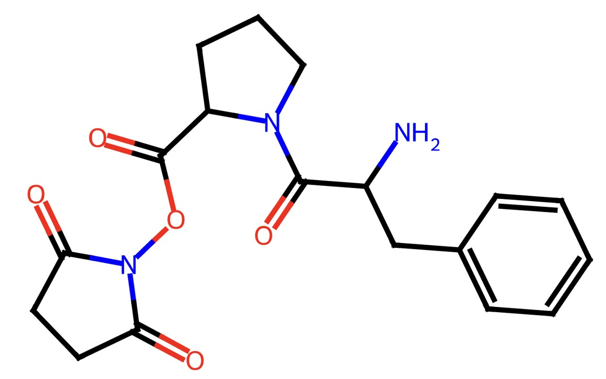

Краткое резюме проекта

Рис. 1. Структурная формула разрабатываемого аналога эналаприла
Цель проекта
Разработка структурного аналога эналаприла с улучшенными ADME-параметрами, сниженной токсичностью и повышенной эффективностью за счет направленного молекулярного дизайна и компьютерного моделирования.
↑ 35×
Эффективнее эналаприла
↓ 32%
Стоимость синтеза
55%
Выход синтеза